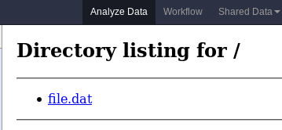

Galaxy Interactive Environments
Contributors
 Saskia Hiltemann
Saskia Hiltemann  Björn Grüning
Björn Grüning  Helena Rasche
Helena Rasche
Questions
What are Galaxy Interactive Environments (GIEs)?
How to enable GIEs in Galaxy?
How to develop your own GIE?
Objectives
Implement a Hello-World Galaxy Interactive Environment
Requirements
- Docker basics
Interactive Environments
Why IEs?
- Embedded access to third-party application inside of Galaxy
- Interactively analyze data, access analysis products within Galaxy

- Bring external analysis platform to the data instead of vice-versa
- no need to download/re-upload your data
Who should use IEs?
- Everyone!
- Programming Environments for Bioinformaticians and Data Scientists
- Jupyter
- Rstudio
- Visualization IEs are great for life scientists
- IOBIO (bam/vcf visualizations)
- Phinch (metagenomics visualizations)
Types of visualizations in Galaxy
GIE for visualization? Check that it is the right choice for your project
- Trackster - built-in genome browser
- Display applications
- UCSC Genome Browser
- IGV
- Galaxy tools
- JBrowse
- Krona
- Visualization plugins
- Charts
- Generic
- Interactive Environments
- Jupyter/Rstudio
- IOBIO (bam/vcf visualizations)
- Phinch (metagenomics visualizations)
Which should I use?

How to launch an IE?
- Can be bound to specific datatypes
- Available under the visualizations button on the dataset
.image-25[]
- Or more general-purpose applications (Jupyter/Rstudio)
- IE launcher
.image-25[ ]
]
IE Launcher
- Choose between different available docker images
- Attach one or more datasets from history
.image-75[]
How does it work?
- Docker Containers are launched on-demand by users..
- ..and killed automatically when users stop using them
.footnote[ Admin Docs: https://docs.galaxyproject.org/en/master/admin/interactive_environments.html ]
Jupyter
- General purpose/ multi-dataset
- Provides special functions to interact with the Galaxy history (get/put datasets)
- Ability to save and load notebooks
.image-75[]
Jupyter
Jupyter
Rstudio
- General purpose/ multi-dataset
- Provides special functions to interact with the Galaxy history
- Ability to save and load workbook and R history object

IOBIO
- Visualizes single dataset
- Only available for datasets of specific formats

IOBIO

Phinch

Admin
- Prerequisites: NodeJs (npm) and Docker; Galaxy user must be able to talk to the docker daemon
- Enable IEs in
galaxy.ymlinteractive_environment_plugins_directory = config/plugins/interactive_environments - Install node proxy
$ cd $GALAXY/lib/galaxy/web/proxy/js/ $ npm install . - Can configure GIEs to run on another host
.footnote[ Advanced configurations: https://docs.galaxyproject.org/en/master/admin/interactive_environments.html]
Development
- Not hard to build!
- All the magic is in:
$GALAXY/config/plugins/interactive_environments/$ie_name/
| Component | File |
|---|---|
| Visualization Plugin Configuration | ../config/${ie_name}.xml |
| IE specific Configuration | ../config/${ie_name}.ini |
| Mako Template | ../templates/${ie_name}.mako |
Development

Hello World Example
- All files in this example available from https://github.com/hexylena/hello-world-interactive-environment/
- Create a GIE that shows the directory listing of
importfolder (datasets loaded into GIE by user)
$ tree $GALAXY_ROOT/config/plugins/interactive_environments/helloworld/
config/plugins/interactive_environments/helloworld/
├── config
│ ├── helloworld.ini
│ ├── helloworld.ini.sample
│ └── helloworld.xml
├── static
│ └── js
│ └── helloworld.js
└── templates
└── helloworld.mako
Create GIE plugin XML file config/helloworld.xml
<?xml version="1.0" encoding="UTF-8"?>
<!DOCTYPE interactive_environment SYSTEM "../../interactive_environments.dtd">
<!-- This is the name which will show up in the User's Browser -->
<interactive_environment name="HelloWorld">
<data_sources>
<data_source>
<model_class>HistoryDatasetAssociation</model_class>
<!-- filter which types of datasets are appropriate for this GIE -->
<test type="isinstance" test_attr="datatype"
result_type="datatype">tabular.Tabular</test>
<test type="isinstance" test_attr="datatype"
result_type="datatype">data.Text</test>
<to_param param_attr="id">dataset_id</to_param>
</data_source>
</data_sources>
<params>
<param type="dataset" var_name_in_template="hda" required="true">dataset_id</param>
</params>
<!-- Be sure that your entrypoint name is correct! -->
<entry_point entry_point_type="mako">helloworld.mako</entry_point>
</interactive_environment>
Set up .ini file, which controls docker interaction config/helloworld.ini.sample
[main]
# Unused
[docker]
# Command to execute docker. For example `sudo docker` or `docker-lxc`.
#command = docker {docker_args}
# The docker image name that should be started.
image = hello-ie
# Additional arguments that are passed to the `docker run` command.
#command_inject = --sig-proxy=true -e DEBUG=false
# URL to access the Galaxy API with from the spawn Docker container, if empty
# this falls back to galaxy.yml's galaxy_infrastructure_url and finally to the
# Docker host of the spawned container if that is also not set.
#galaxy_url =
# The Docker hostname. It can be useful to run the Docker daemon on a different
# host than Galaxy.
#docker_hostname = localhost
[..]
- Create mako template
templates/helloworld.mako- Loads configuration from
inifile - launches docker container,
- builds a URL to the correct endpoint through Galaxy NodeJS proxy
- set environment variable
CUSTOMto be passed to container - attach dataset selected by user (
hda)
- Loads configuration from
<%namespace name="ie" file="ie.mako" />
<%
# Sets ID and sets up a lot of other variables
ie_request.load_deploy_config()
# Define a volume that will be mounted into the container.
# This is a useful way to provide access to large files in the container,
# if the user knows ahead of time that they will need it.
user_file = ie_request.volume(
hda.file_name, '/import/file.dat', how='ro')
# Launch the IE. This builds and runs the docker command in the background.
ie_request.launch(
volumes=[user_file],
env_override={
'custom': '42'
}
)
[..]
(continued)
[..]
# Only once the container is launched can we template our URLs. The ie_request
# doesn't have all of the information needed until the container is running.
url = ie_request.url_template('${PROXY_URL}/helloworld/')
%>
<html>
<head>
${ ie.load_default_js() }
</head>
<body>
<script type="text/javascript">
${ ie.default_javascript_variables() }
var url = '${ url }';
${ ie.plugin_require_config() }
requirejs(['interactive_environments', 'plugin/helloworld'], function(){
load_notebook(url);
});
</script>
<div id="main" width="100%" height="100%">
</div>
</body>
</html>
Lastly we must write the load_notebook function, static/js/helloworld.js
function load_notebook(url){
$( document ).ready(function() {
test_ie_availability(url, function(){
append_notebook(url)
});
});
}
Hello World Example
- The only thing missing now is the GIE (Docker) container itself
- Container typically consists of:
- Dockerfile
- Proxy configuration (e.g. nginx)
- Custom startup script/entrypoint
- Script to monitor traffic and kill unused containers
- The actual application for the users (here: simple python process which serves
directory contents of
/importfolder of container)
FROM ubuntu:14.04
# These environment variables are passed from Galaxy to the container
# and help you enable connectivity to Galaxy from within the container.
# This means your user can import/export data from/to Galaxy.
ENV DEBIAN_FRONTEND=noninteractive \
API_KEY=none \
DEBUG=false \
PROXY_PREFIX=none \
GALAXY_URL=none \
GALAXY_WEB_PORT=10000 \
HISTORY_ID=none \
REMOTE_HOST=none
RUN apt-get -qq update && \
apt-get install --no-install-recommends -y \
wget procps nginx python python-pip net-tools nginx
# Our very important scripts. Make sure you've run `chmod +x startup.sh
# monitor_traffic.sh` outside of the container!
ADD ./startup.sh /startup.sh
ADD ./monitor_traffic.sh /monitor_traffic.sh
# /import will be the universal mount-point for IPython
# The Galaxy instance can copy in data that needs to be present to the
# container
RUN mkdir /import
[..]
(continued)
[..]
# Nginx configuration
COPY ./proxy.conf /proxy.conf
VOLUME ["/import"]
WORKDIR /import/
# EXTREMELY IMPORTANT! You must expose a SINGLE port on your container.
EXPOSE 80
CMD /startup.sh
- Proxy configuration (nginx)
- reverse proxy our directory listing process running on port 8000
server {
listen 80;
server_name localhost;
access_log /var/log/nginx/localhost.access.log;
# Note the trailing slash used everywhere!
location PROXY_PREFIX/helloworld/ {
proxy_buffering off;
proxy_pass http://127.0.0.1:8000/;
proxy_redirect http://127.0.0.1:8000/ PROXY_PREFIX/helloworld/;
}
}
- Create the
startup.shfile which starts our directory listing service
#!/bin/bash
# First, replace the PROXY_PREFIX value in /proxy.conf with the value from
# the environment variable.
sed -i "s|PROXY_PREFIX|${PROXY_PREFIX}|" /proxy.conf;
# Then copy into the default location for ubuntu+nginx
cp /proxy.conf /etc/nginx/sites-enabled/default;
# Here you would normally start whatever service you want to start. In our
# example we start a simple directory listing service on port 8000
cd /import/ && python -mSimpleHTTPServer &
# Launch traffic monitor which will automatically kill the container if
# traffic stops
/monitor_traffic.sh &
# And finally launch nginx in foreground mode. This will make debugging
# easier as logs will be available from `docker logs ...`
nginx -g 'daemon off;'
- Lastly, the script to monitor traffic and shut down if user is no longer connected,
monitor_traffic.sh
#!/bin/bash
while true; do
sleep 60
if [ `netstat -t | grep -v CLOSE_WAIT | grep ':80' | wc -l` -lt 3 ]
then
pkill nginx
fi
done
Hello World Example
- We are now ready to build our container, and try out our new GIE!
- If the container is hosted on a service like Dockerhub or quay.io, it will be automatically fetched on first run.
$ cd hello-ie
$ docker build -t hello-ie .

.footnote[Try it yourself: https://github.com/hexylena/hello-world-interactive-environment]
Key Points
- Interactive Environments offer access to third-party applications within Galaxy
- Interactive Environments run in a docker images for sandboxing and easy dependency management
Thank you!
This material is the result of a collaborative work. Thanks to the Galaxy Training Network and all the contributors! This material is licensed under the Creative Commons Attribution 4.0 International License.
This material is licensed under the Creative Commons Attribution 4.0 International License.